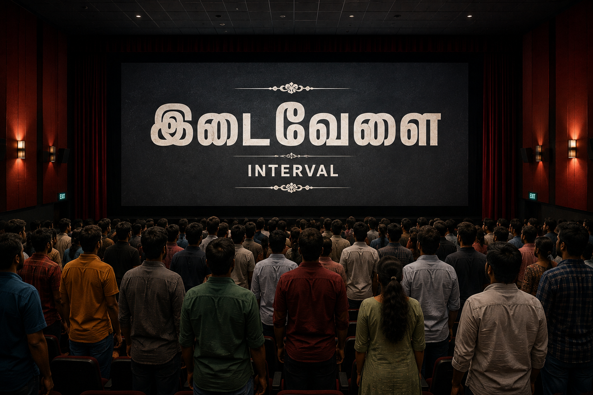

அன்று சினிமா தியேட்டர்களில் ‘ஒரு பேயின் கதை’ என்ற புதிய திரைப்படம் வெளியானது. முதல் நாளில் முதல் ஷோவில் அந்த திரைப்படத்தை காண அனைத்து தியேட்டர்களிலும் கூட்டம் வழிந்தோடியது. அதற்கு காரணம் அது பேய் படம் என்பதால் மட்டுமல்ல,அந்த படத்தில் ஒரு முன்னனி கதாநாயகன் நடித்திருந்தார் என்பதாலும் கூட. தியேட்டர்கள் முன் அலையென திரண்டிருந்த ரசிகர்கள்,டிக்கெட் கவுன்டர் திறந்தவுடன் பணம் கொடுத்து டிக்கெட்டை பெற்று கொண்டு அரங்கிற்குள் சென்று தங்களது இருக்கைகளில் அமர்ந்தனர்.

ரசிகர்களுக்கு ஒரே ஆச்சரியம். ஒரு பேயின் கதை என படத்திற்கு பெயர் வைத்து கொண்டு இடைவேளை வரை பேய் என்ற ஒன்று வரவேயில்லையே என ரசிகர்கள் குழப்பத்துடன் தியேட்டர் வளாகத்திற்கு சென்று அங்கிருந்த கடைகளில் பாப்கார்ன்,ஐஸ் கிரீம் என வாங்கி கொண்டு மீண்டும் அரங்கிற்குள் வந்து தங்களது இருக்கைகளில் அமர்ந்தனர். இடைவேளைக்கு பிறகு தான் படத்தில் பேய் வரும் என ரசிகர்கள் ஆவலுடன் இருந்தனர்
Read full story
click
privacy policy | Terms&condition | Copyright policy | disclaimer